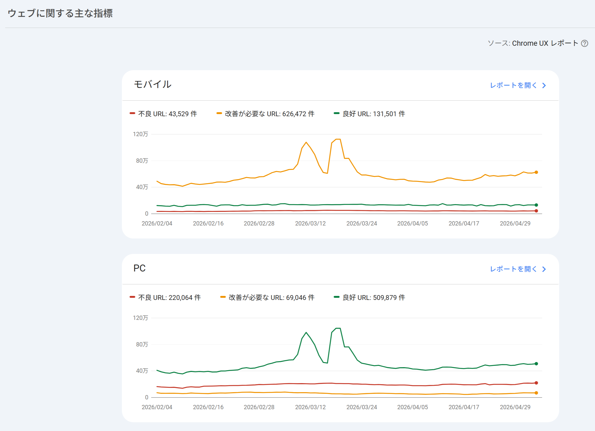
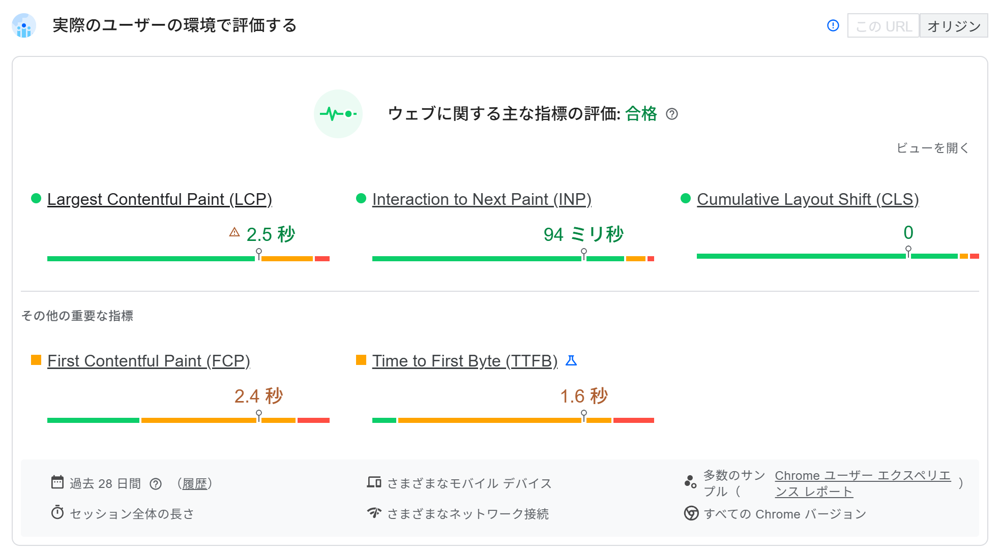

テクニカルSEO
基礎：HTML構造、1URL1コンテンツ、サイト構造：URL設計、内部リンク、クロール制御：robots.txt、サイトマップ、エラー・スパム対応、表示速度：ネットワーク／レンダリング／サーバー、Core Web Vitals、測定ツール、HTTPS
測定ツールの使い分け：Search Console・Lighthouse・PageSpeed Insights
Core Web Vitalsを測定するツールには、それぞれ異なる特徴があります。まず、計測データには性質の異なる2種類があることを理解しておきましょう。
フィールドデータ
実際のユーザーから収集された実測データ。GoogleがChromeユーザーの利用状況から集める「CrUX（Chrome User Experience Report）」がこれにあたり、Search ConsoleやPageSpeed Insightsで確認できます。
ラボデータ
決められた条件下でシミュレーション的に計測されたデータ。Lighthouseが該当し、端末スペックやネットワーク状況に結果が左右されます。十分なアクセス数がなくCrUXデータが集まらないページでも計測できます。
3つのツールは、調査できるページの範囲や参照するデータソースが異なります。
| ツール | 調査可能ページ | データソース | 特徴 |
|---|---|---|---|
| Search Console | 自社管理の公開ページのみ | CrUX（フィールドデータ） | サイト全体のCWV傾向を把握し、「不良／改善が必要」なURL群を特定できる |
| PageSpeed Insights | 公開ページのみ | CrUX＋Lighthouseラボデータ | URLを入力するだけで実ユーザーデータと計測環境データの両方を即座に確認できる |
| Lighthouse | 非公開ページも含めて全て | ラボデータのみ | 開発環境での詳細なデバッグに向き、認証が必要なページもテストできる |
実務では、Search Consoleで問題のあるURL群を特定 → Lighthouseで技術的な原因を深掘り → 改善を実施 → PageSpeed Insightsで効果を検証という流れで使い分けるのが典型的なパターンです。
Search Consoleの「ウェブに関する主な指標」レポートでは、LCP・INP・CLSそれぞれについて、良好・改善が必要・不良の3段階でURLが分類されます。

| 指標 | 良好 | 改善が必要 | 不良 |
|---|---|---|---|
| LCP | 2.5秒以下 | 4秒以下 | 4秒超 |
| INP | 200ミリ秒以下 | 500ミリ秒以下 | 500ミリ秒超 |
| CLS | 0.1以下 | 0.25以下 | 0.25超 |
Search Consoleでは、プライバシー保護の観点から、影響を受けているURLが個別にではなく「URLグループ」（ユーザー体験が類似すると考えられるURLの集合）としてまとめて表示されます。1つのグループを改善すると、同グループに属する複数ページの改善につながるという利点もあります。
Lighthouseは、パフォーマンス・ユーザー補助（アクセシビリティ）・おすすめの方法・SEOの4項目を100点満点で採点します。パフォーマンススコアは、FCP・Speed Index・LCP・TBT（Total Blocking Time）・CLSの加重平均で算出され、特にTBT（重み30%）とLCP・CLS（各25%）の影響が大きくなっています。
PageSpeed Insightsには「このURL」
